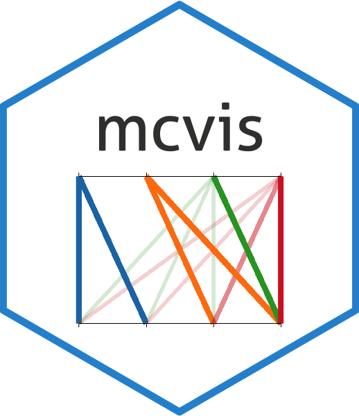
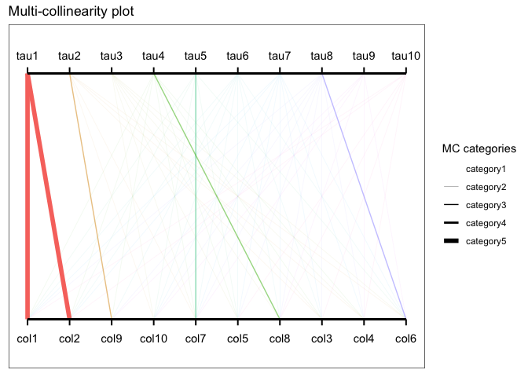

Introduction
mcvis is a R package for visualising multicollinearity in a data design matrix. The underlying methodology uses resampling techniques to identify groups of variables that causes multicollinearity.
You can learn more about mcvis from this vignette.
Installation
mcvis can be installed using the devtools package.
devtools::install_github("leaffur/mcvis")
A quick example
Using a mcvis bipartite plot, variables (bottom row) that cause strong collinearity are visualised as bolded lines connecting with our “tau” statistics (top row).
library(mcvis) set.seed(1) p = 10 n = 100 X = matrix(rnorm(n*p), ncol = p) ## Inducing collinearity into the design matrix X[,1] = X[,2] + rnorm(n, 0, 0.1) mcvis_result = mcvis(X) ggplot_mcvis(mcvis_result)
